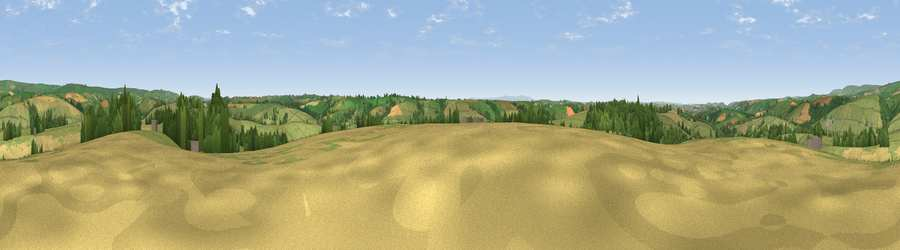

Viewpoint near Bishops Nympton
#15559 in England · top 27% of its area beats it · near Bishops Nympton · access?Where it is
The exact computed spot (SS 77525 24925). Click the marker for map links.
Public access: no public right of way or access land is recorded at this exact spot — it may be on private land. Computed from Natural England's CRoW access layer and OpenStreetMap rights of way — not the legal definitive map. Always verify locally.
The view, rendered

A 360° render of this exact spot computed from the terrain model, tree cover and land cover — summer colours, afternoon light, calibrated against photographs of famous viewpoints. Real trees, hedges and buildings will differ in detail.
The panorama
Grey silhouette: terrain skyline in each direction (720 bearings, Earth curvature and refraction included). Dashed green: skyline with trees (+15 m) and buildings (+8 m) as obstacles. Blue strip: how far the ground is visible on each bearing.
Where the view opens
Wedge length = distance to the farthest visible ground on that bearing (vegetation-aware). Rings at 10, 25 and 50 km.
What fills the view
75% grassland · 13% woodland · 12% cropland ·
Angular shares of the visible panorama (visual magnitude), not map area. Landscape diversity 0.33 (0–1 Shannon).
Key numbers
More beautiful places nearby
The staircase of upgrades: each row has a higher view potential than everything closer. Driving times are estimates from straight-line distance, calibrated against real road routing — check an actual route before setting out.
| Place | Direction | Drive | Score |
|---|---|---|---|
| Mornacott Hill | NNW · 3 km | ~7 min | 59.7 |
| Sindercombe Hill | N · 3 km | ~8 min | 61.3 |
| Viewpoint near North Molton | NW · 6 km | ~12 min | 64.0 |
| Viewpoint near Twitchen | NNE · 6 km | ~13 min | 66.0 |
| Viewpoint near Twitchen | N · 7 km | ~15 min | 69.1 |
| Viewpoint near Simonsbath | NNW · 12 km | ~22 min | 73.1 |
| Viewpoint near Brayford | NNW · 13 km | ~23 min | 74.1 |
| Viewpoint near Challacombe | NNW · 16 km | ~28 min | 75.8 |
51.01063, -3.74719 · source: screening · position refined by local search. Computed location — check access rights before visiting.